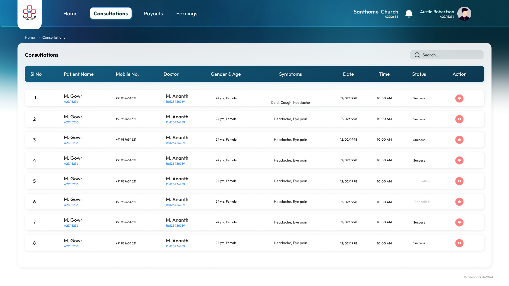
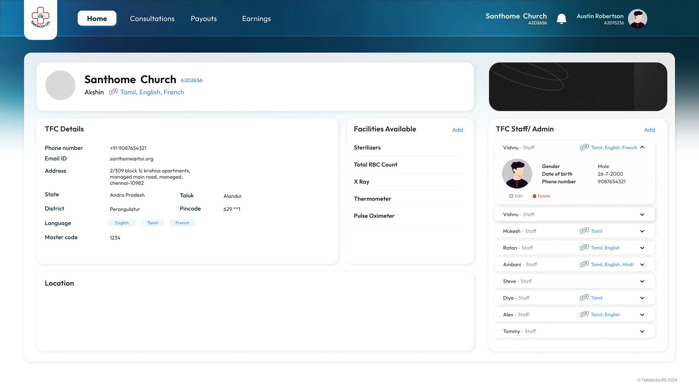
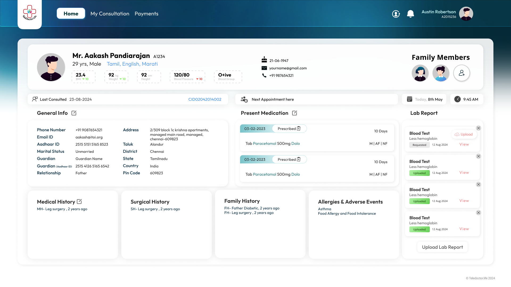
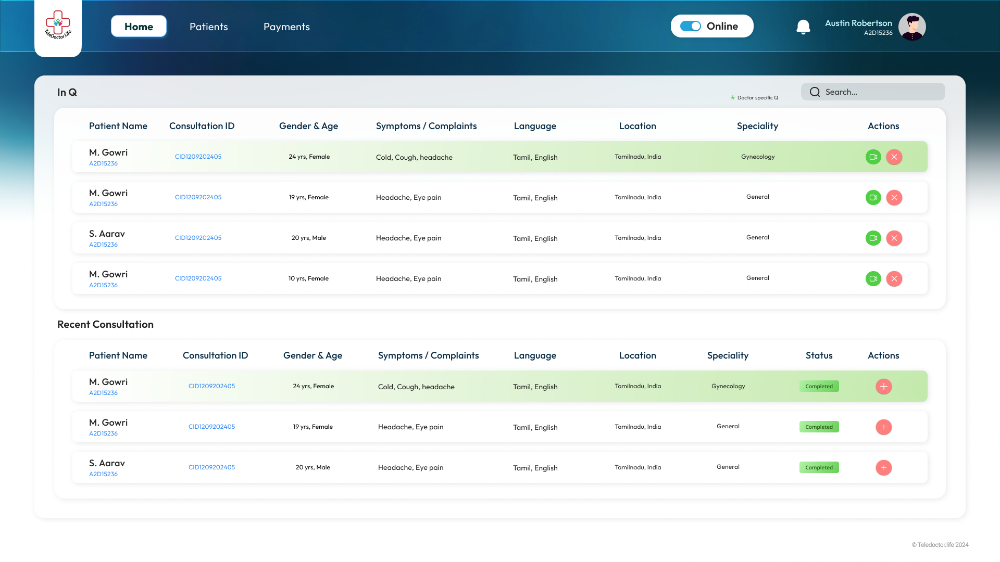
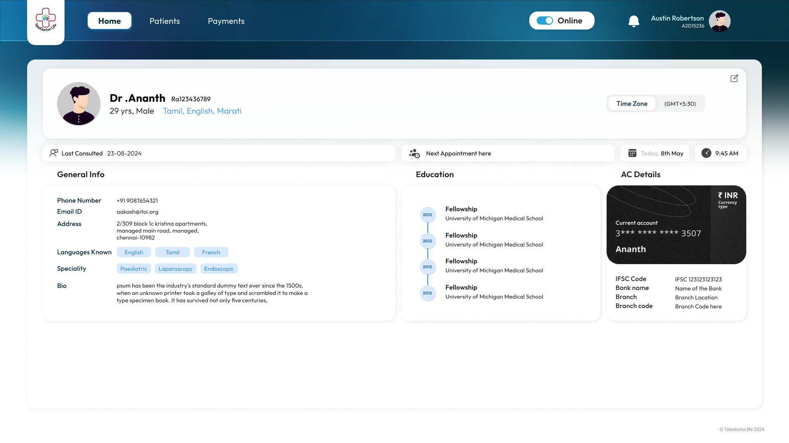
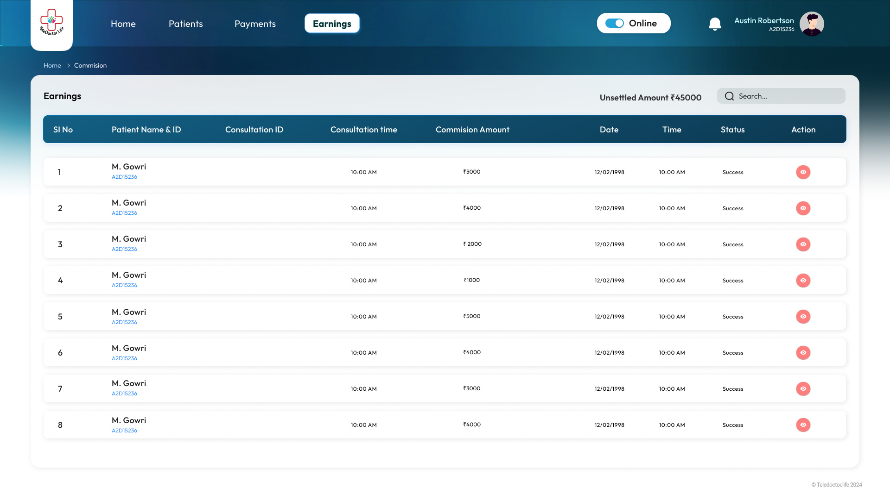

TeleDoctor
0→1 Product DesignHealthcare UXWeb & MobileFigma
"A telehealth platform designed from scratch - built for patients who don't own smartphones, doctors who want to extend their reach, and communities that need healthcare at their doorstep."

designed end-to-end
concept to live app
Google Play
served population
01Overview
Project Type
0→1 Web & Mobile App Design
Organisation
TeleDoctor · INTO IMPACT NETWORK FOUNDATION · Nagercoil, Tamil Nadu. Founded 07 October 2023.
Platforms
iOS App · Android App · Website (teledoctor.life)
User Types
Admin · Doctor · Patient · Tele Facilitation Center (TFC)
Designed the complete product end-to-end - all 4 user flows, onboarding, consultation experience, TFC interface, admin dashboard, and the marketing website. Every screen, every interaction, every decision from a blank canvas to a live product used by real patients in rural India.
02Problem
People in rural India face a healthcare access crisis that goes beyond affordability. The nearest doctor may be hours away. Patients are often elderly or illiterate. Many don't own smartphones. When you're sick, these aren't inconveniences - they're barriers between you and survival.
- Geography - Rural patients travel 2-4 hours to reach qualified doctors, often delaying care until conditions worsen
- Digital illiteracy - A large portion of the target population cannot use smartphones independently
- No smartphone ownership - Many rural patients, especially elderly, don't own devices capable of video consultation
- Affordability - High travel cost + consultation fees make regular healthcare inaccessible for low-income families
- No continuity of care - Without records or follow-ups, patients repeat consultations and lose prescription history
- Doctor shortage - Qualified doctors are concentrated in cities, leaving rural areas severely underserved
"We come across patients who desperately wish to consult a Doctor who will be able to treat them at an affordable cost, from their home. TeleDoctor is meeting this felt need."
03The TFC Innovation
The biggest UX challenge wasn't designing a good app - it was designing for users who couldn't use the app at all.
"The breakthrough: bring technology to trust, not the other way around."
Standard telehealth solutions assume smartphone ownership and digital literacy. Our users had neither. The insight: place technology inside a trusted community location instead of expecting users to bring technology to themselves.
- Tele Facilitation Centers are set up in churches, thalivars' (community elder) houses, and trusted community spaces in rural areas
- Each TFC is equipped with devices and basic medical equipment for virtual consultations
- A trained Care Worker / Health Worker is present to assist patients who cannot use technology themselves
- TFC workers handle device operation, help patients describe symptoms, and facilitate the video consultation
- All consultation records sync back to the patient's TeleDoctor profile automatically
- TFCs assist with lab requisitions, prescription collection, and document uploads

TFC Consultations view

TFC Profile

Consultation Profile
04Research
Research Methods
- Contextual research - personal experience accessing rural healthcare (founders' own struggle)
- Field observation - understanding how rural patients currently navigate healthcare access
- Community interviews - understanding the role of churches and community leaders as trusted spaces
- Competitive analysis - existing telehealth apps (Practo, mFine, DocsApp) and why they fail rural users
- COVID-19 relief learnings - ITOI's prior experience mobilising tele-consultations in remote areas
Key Findings
- Existing telehealth apps are designed for urban, smartphone-literate users - completely inaccessible for rural elderly
- Rural patients trust community figures (church leaders, thalivars) more than institutions - TFC location is critical to adoption
- Doctors want flexible scheduling and ability to expand reach without relocating
- Patients need e-prescriptions and lab requisitions sent digitally to avoid travelling back for paperwork
- Multi-specialty access is a major gap - rural areas have GPs but no specialists
054 User Personas
Four completely distinct users. Each with different literacy levels, devices, motivations, and needs. Each requiring their own purpose-built experience.
The Patient
Rural resident, often elderly or illiterate. May not own a smartphone. Needs to consult a doctor without travelling hours. Primary beneficiary of TFC access.
Needs: Simple guided consultation, prescription in hand, follow-up reminders.
The Doctor
Qualified physician wanting to extend care beyond their clinic. Values flexible scheduling, clear patient history, ability to issue e-prescriptions.
Needs: Reliable video call, patient records at a glance, digital prescription tool.
The TFC Operator
Community Care Worker at a church or community elder's house. Acts as the bridge between illiterate patients and the platform.
Needs: Simple interface, ability to register patients, assist consultations, upload documents.
The Admin
Platform administrator managing doctors, TFCs, patients, and operations. Needs full oversight dashboard and analytics.
Needs: Doctor verification, TFC registration approval, consultation logs, analytics.
06Ideation
- 4 separate UX flows - each user type gets a purpose-built interface, not a one-size-fits-all app
- TFC as a first-class user type - treating the facilitation center as a primary user, not an afterthought, was the central design innovation
- Mobile-first for patients & doctors - iOS & Android apps; web-based for TFC and Admin
- 3-step simplicity for patients - Sign In → Find Doctor → Schedule Consultation. No more than 3 taps to start
- E-prescriptions & lab requisitions - digital delivery removes the need to travel back for paperwork
- Community-trust placement - TFCs in churches and thalivars' homes, not government buildings, to maximise adoption
- General + Specialist split - patients choose between GP and specialist based on need
07Design
Onboarding, Consultation & Health Records

Patient Dashboard

Find a Doctor
Video Consultation

Prescription View

Consultation History

Health Records

Lab Requisition

Patient Profile

Payment History
Dashboard, Patient Records & Prescriptions

Doctor Dashboard

Doctor Profile

Issue Prescription

Recent Patients

Earnings

Payment List
Register Patients & Assist Consultations
TFC Dashboard
Register Patient
Assist Consultation

Payment Records
Doctor Verification, TFC Management & Analytics

Admin Dashboard

Doctor Verification

New Doctors

Doctors & Patients

TFC List

TFC Detail

Lab Test Master Data

Create TFC

Payment & Refund
08Testing
- Usability testing with rural patients - could they navigate the patient flow independently without assistance?
- TFC operator testing - could a Care Worker register and assist a patient within 5 minutes?
- Doctor flow testing - prescription and lab requisition speed, accuracy, and clarity
- Accessibility testing - font sizes, contrast ratios, icon clarity for low-literacy and elderly users
09Outcome
Impact
- Rural patients can access qualified doctors without travelling - from their nearest church or community elder's home
- Doctors can extend their practice to areas they could never serve before
- TFC model bridges the digital literacy gap - no smartphone or technical knowledge required from the patient
- E-prescriptions and lab requisitions eliminate unnecessary travel for paperwork
- Product is live on Google Play and the App Store
Designing TeleDoctor taught me that the most impactful UX decisions are often not about the interface at all. The TFC idea - placing technology inside a church or a community elder's home - was not a design decision on a screen. It was a design decision about trust, access, and human behaviour. I learned that when you design for users who are truly underserved, you have to question every assumption about how technology is accessed, not just how it looks. That lesson changed how I think about every project I work on.
10Future Steps
-
01
Offline mode Low connectivity areas need consultations that can buffer and sync when connection returns - critical for rural coverage.
-
02
Regional language support Tamil, Hindi, Malayalam for patients and TFC workers who cannot read English.
-
03
Remote diagnostic tools Integrating basic vitals (BP, glucose) from affordable IoT devices at TFCs to improve consultation quality.
-
04
Expanding TFC network Scaling to mosques, schools, and panchayat offices beyond churches - broadening community trust anchors.
-
05
Insurance integration Connecting with Ayushman Bharat and state health schemes for zero-cost consultations for eligible patients.